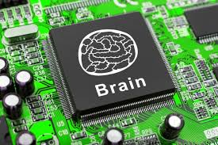

Creation of an artificial intelligence system that fully emulates the functions of a human brain has long been a dream of scientists. A brain has many superior functions as compared with super computers, even though it has light weight, small volume, and consumes extremely low energy. This is required to construct an artificial neural network, in which a huge amount (1014) of synapses is needed.
Most recently, great efforts have been made to realize synaptic functions in single electronic devices, such as using resistive random access memory (RRAM), phase change memory (PCM), conductive bridges, and synaptic transistors. Artificial synapses based on highly aligned nanostructures are still desired for the construction of a highly-integrated artificial neural network.
Prof. Tae-Woo Lee, research professor Wentao Xu, and Dr. Sung-Yong Min with the Dept. of Materials Science and Engineering at POSTECH have succeeded in fabricating an organic nanofiber (ONF) electronic device that emulates not only the important working principles and energy consumption of biological synapses but also the morphology. They recently published their findings in Science Advances, a new sister journal of Science.
The morphology of ONFs is very similar to that of nerve fibers, which form crisscrossing grids to enable the high memory density of a human brain. Especially, based on the e-Nanowire printing technique, highly-aligned ONFs can be massively produced with precise control over alignment and dimension. This morphology potentially enables the future construction of high-density memory of a neuromorphic system.
Important working principles of a biological synapse have been emulated, such as paired-pulse facilitation (PPF), short-term plasticity (STP), long-term plasticity (LTP), spike-timing dependent plasticity (STDP), and spike-rate dependent plasticity (SRDP). Most amazingly, energy consumption of the device can be reduced to a femtojoule level per synaptic event, which is a value magnitudes lower than previous reports. It rivals that of a biological synapse. In addition, the organic artificial synapse devices not only provide a new research direction in neuromorphic electronics but even open a new era of organic electronics.
This technology will lead to the leap of brain-inspired electronics in both memory density and energy consumption aspects. The artificial synapse developed by Prof. Lee's research team will provide important potential applications to neuromorphic computing systems and artificial intelligence systems for autonomous cars (or self-driving cars), analysis of big data, cognitive systems, robot control, medical diagnosis, stock trading analysis, remote sensing, and other smart human-interactive systems and machines in the future.